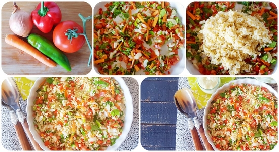

Ensaladilla de bulgur
| Tiempo: 10' | Dificultad: Fácil | Personas: 2 | Tipo: Entrante |
|---|
Ingredientes:
- 1 vaso bulgur seco
- 2 vasos y medio agua
- Sal
- 1 tomate
- 1 cebolla
- 1 pimiento rojo
- 1 pimiento verde
- Aceite oliva
- 1 zanahoria
- Vinagre manzana
Pasos a seguir:
- Empezamos cociendo el bulgur y eso lo haremos como si fuese arroz, ponemos a calentar el agua en un cazo, cuando empiece a hervir añadimos una pizca de sal -no mucha, pues si es necesario ya rectificaremos el punto de sal al final-, y añadimos el bulgur. Esperamos a que rompa a hervir de nuevo y bajamos el fuego para mantener el hervor. Lo dejamos cocinando 20 minutos, aunque no está de más echar un vistazo a las instrucciones del paquete, que nos dirá el tiempo necesario para ese tamaño de grano.
- Una vez cocido el bulgur, lo pasamos a un colador y lo enjuagamos bajo un chorro de agua fría para refrescarlo y cortar la cocción.
- Mientras se está cociendo el bulgur, lavamos y pelamos las hortalizas que sea necesario pelar, las cortamos en trocitos pequeños junto con el perejil si se lo echamos, las ponemos en la misma fuente que vayamos a servir nuestra ensaladilla de bulgur, y aliñamos con sal, aceite de oliva virgen extra y vinagre.
- Cuando esté listo el bulgur y lo hayamos refrescado completamente, lo añadimos sobre la vinagreta, mezclamos bien, rectificamos de sal si fuese necesario y servimos.
